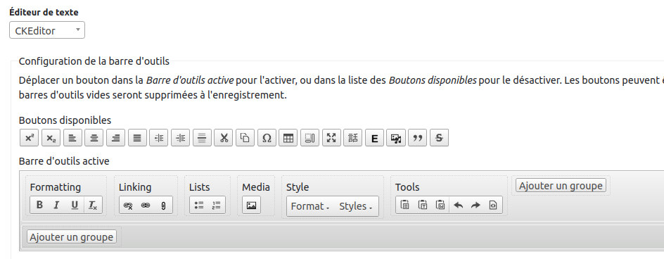
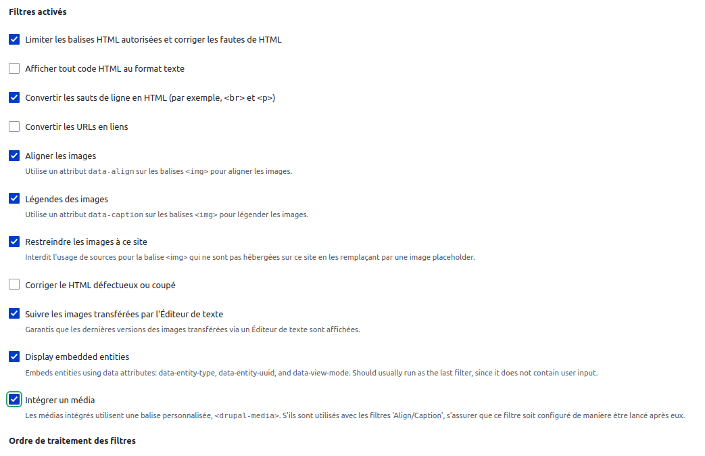
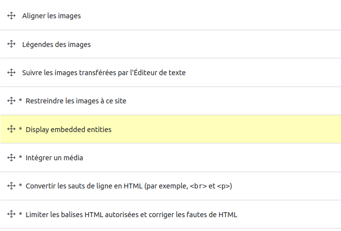

Configurations CKEditor
Modifier le rendu du ckEditor
dans configuration /redaction de contenu/format de texte et editeur
Si on autorise des éléments dans le ckEditor ca peut etre une faille de sécurité.
PAr exemple avec le iframe il y a des grandes failles de sécurité.
Ainsi on essaie de limiter les possibilité de modification du html par less contributeurs
Le Html Complet
Editeur de texte
Il y a la possibilité de changer d'éditeur et de rajouter d'autres éditeurs (avec un plugin par exemple)
Barre d'outil
format = balises h2 etc...
On peut aussi rajouter ses propres boutons par exemple un element média (mais c'est pas recomandé car ce sera moche...) il est pré&férable de rajouter un paragraph media
Paramètre de plugin
Images
Changer le repertoire des images
Modifier la taiolle maximum (taille de contenu)
liste deroulante des styles
On peut ajouter des classes à des elements
a.download-link|Lien de téléchargement
On peut ajouter des liens de telechargement uniquement sur des a
type de html.classe|nom pour le contributeur
Filtres activés
A cocher imperativement
Limiter les balises HTML autorisées et corriger les fautes de HTML
Restreindre les images à ce site
Attention à l'ordre d'affichage des éléments
Exemple: on doit afficher les images avant d'y appliqur un correctif
Paramètres de filtrage
Dan les paramètres de filtrages bien configurer les elements
Integrer types de média
visualisation par defaut: pragraph media